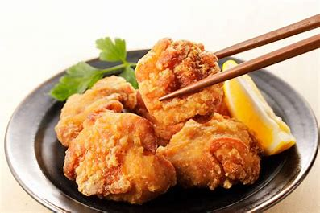

Japan Fried Chicken
Karaage Chicken is a popular Japanese dish known for its crispy exterior and juicy interior. It’s easy to make as long as you don’t mind deep frying.

Ingredients
- 350 grams chicken thigh fillets (cut into large bite-size pieces)
- 20 grams corn flour (cornstarch)
- Vegetable oil (for deep frying)
- 1 tablespoon soy sauce
- 1 tablespoon cooking sake
- 1/2 teaspoon mirin
- 2 teaspoons freshly grated ginger (including juice)
- Cabbage or shredded lettuce (for serving)
- Parsley sprigs (for garnish)
Instructions
- Cut the fillets into large bite size pieces – about 5cm x 4cm / 2″ x 1½”.
- Put the chicken pieces and the Marinade ingredients in a ziplock bag, and massage well to coat every piece of meat with the marinade.
- Marinate for 30 minutes to 1 hour.
- Pat-dry the chicken pieces.
- Coat the chicken pieces with corn flour/cornstarch.
- Deep-fry the chicken pieces at 160°C/320°F.
- Rest the fried chicken for 3-4 minutes, then deep-fry at 190-200°C/374-392°F.
Tips
Cook the chicken pieces by deep frying them at a lower temperature (about 160-165°C/320-329°F). The objective of this step is to cook the chicken to just before fully cooked without browning the surface too much.
Rest for 3-4 minutes during which the residual heat cooks the chicken through.
Deep fry the chicken pieces for the second time at about 190-200°C/374-392°F to make the outside of the chicken crunchy. This step is necessary because the first frying will make soggy fried chicken due to the lower temperature.
Return To Homepage